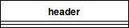
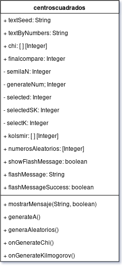
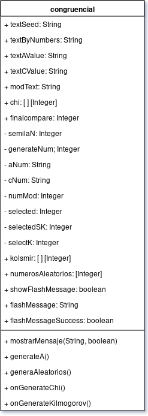
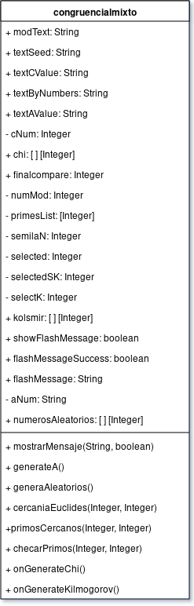
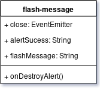
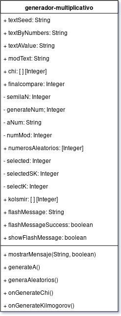
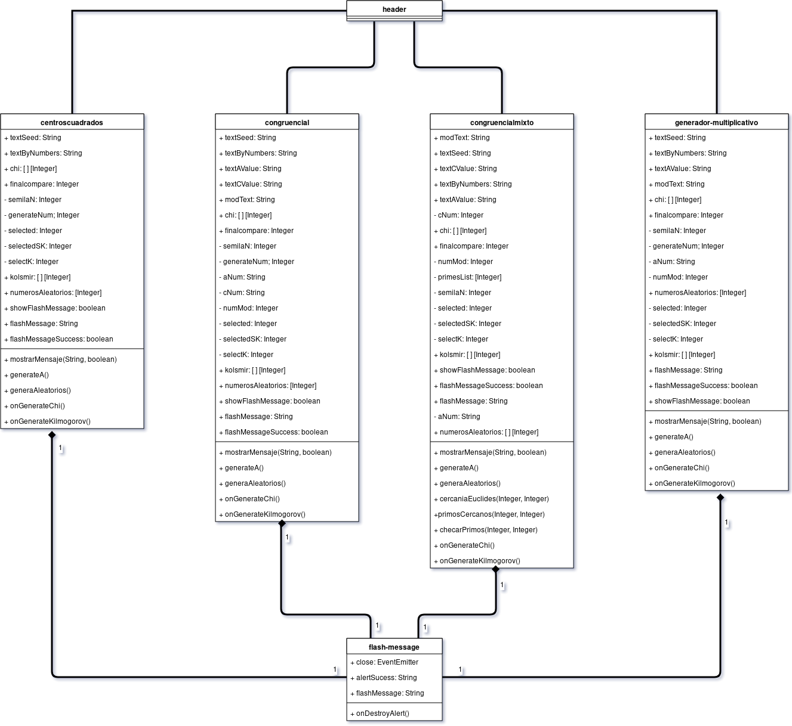

Diagrama de Clases¶
El diagrama de clases nos permite visualizar el contenido de cada una de las clases que conforman a nuestro sistema
a continuación se demuestra como se compone el sistema de Generador de Números Aleatorios.
Todo el sistema se encuentra en la carpeta de /src/app. Por lo que el siguiente diagrama se va a enfocar en
esta carpeta.
Angular tiene módulos que conforman a un sistema. Cada módulo que exista en el sistema se tomara como si fuera una clase. Un módulo se conforma de la siguiente estructura
Nombre del modulo:
Modulo
├── modulo.css
└── modulo.html
└── modulo.ts
Donde .html y .css son las vistas que rendera el modulo y el archivo .ts contiene la logica del sistema.
Nota
modulo es el nombre de la clase que se esta empleando. En este caso puede tener cualquier nombre siguiendo con las convenciones de Angular.
header¶
Header no tiene lógica que se procese en el controlador, ya que todo el contenido se encuentra en la vista .html por lo que
el diagrama de clases esta vacio.
Su diagrama es el siguiente:
centroscuadrados¶
El método de centros cuadrados se encarga de generar como bien dice su nombre el procesamiento de números aleatorios a traves de método de cuadrados perfectos.
Su diagrama es el siguiente:
congruencial¶
Este diagrama de clases corresponde al método generador congruencial lineal. La diferencia entre este y el mixto es que las pruebas de HULL-DOBELL no se ejecutan.
Su diagrama es el siguiente:
congruencialmixto¶
En este diagrama se expifican los métodos del generador congruencial mixto. En este como bien se especifica estan las pruebas de HULL-DOBELL
Su diagrama es el siguiente:
flash-message¶
Este modulo corresponde a la generación de los mensaje de error, advertencia y ok.
Su diagrama es el siguiente:
generador-multiplicativo¶
Se encarga de mostrar la lógica de implementacion de método generador-multiplicativo.
Su diagrama es el siguiente:
Diagrama de Clases¶
El diagrama con sus respectivas conexiones se ve de la siguiente forma:
